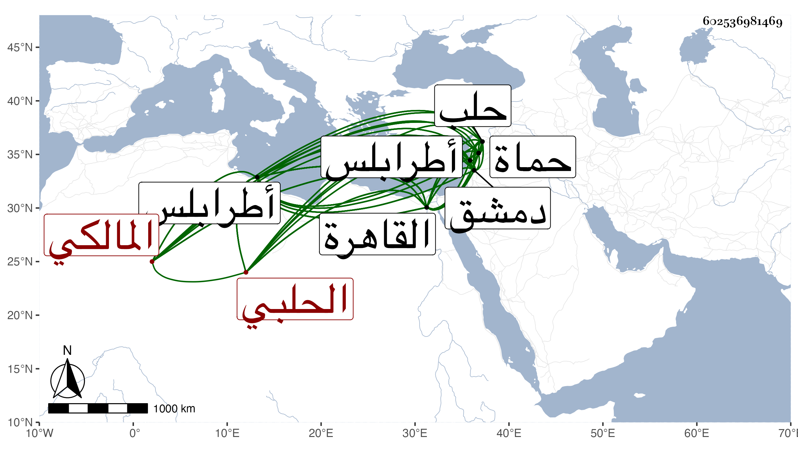

0902Sakhawi.DawLamic.ITO20230111-ara1.EIS1600.602536981469
Biography ID: 602536981469
140
علي بن يوسف بن إبراهيم بن عبد الله بن عبد القادر بن أحمد العلاء الحلبي المالكي ويعرف بالناسخ . ذكر أنه ولد تقريبا سنة إحدى وثمانين وسبعمائة بالقاهرة ثم رحل به أبوه إلى حلب فقرأ بها القرآن وبحث في الفقه على التاج الأصبهيدي والسراج الفوي والشمس بن الركن ، وعلى مذهب مالك على الشمس التواتي وأخذ عنهم العربية وغيرها ، ورحل إلى القاهرة سنة ثلاث وثمانمائة في الفتنة وسمع بها على ابن الملقن وغيره ، وحج في سنة خمس عشرة وولي كتابة سر حماة عن المستعين بالله ثم كتابة سر طرابلس من نوروز وحضر معه قي قلعة دمشق وامتحن مع الناصري بن البارزي وتطلبه ليقتله فأعمل الحيل وهرب وركب البحر فأسره فرنج الكيتلان فأقام معهم نحو أربعين يوما ثم احتال حتى تخلص هو وغيره من الأسر ، وقصد القاهرة فأقام بها حتى مات المؤيد فولي عن ابنه كتابة سر طرابلس وكاتب السر بالقاهرة حينئذ العلم بن الكويز ثم عزل عن قرب ورجع إلى القاهرة فأقام بها حتى ولي قضاء المالكية بطرابلس عن الأشرف ثم انتقل لنظر الجيش بحلب ثم انفصل لعدم إجابته في دفع ما طلب منه من المال وقصد القاهرة فصادف وهو في سعسع القاصد إليه بتوليته قضاء المالكية بحماة وذلك في سنة خمس وثلاثين ثم عزل عنه في سنة سبع وثلاثين كل هذا بإملائه وليس بثقة بل هو فرد في المكر والخداع والحيل وكثرة المجازفة وقلة الوثوق بقوله ويحكى عنه في ذلك عجائب وله نظم ومنه مرثية التاج بن الغرابيلي أولها :
| تشتت شملي بعد جمع وألفة | فوا غربتي من بعدهم وتشتتي |
وقد ولي قضاء المالكية بحلب ثم انفصل عنه وولي قضاء دمشق عن الظاهر جقمق بسفارة الكمال بن البارزي وحسنت سيرته ثم عزل نفسه ونزح إلى بلاد الروم . ومات هناك في حدود سنة خمس وأربعين رحمه الله .
